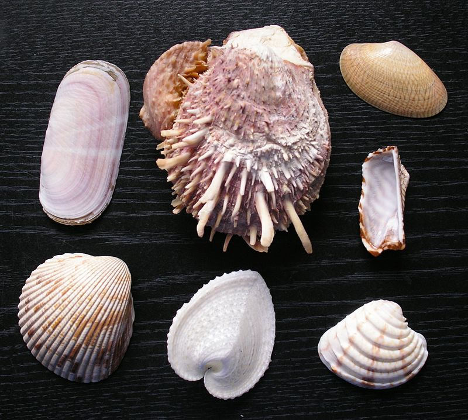

Los Moluscos forman uno de los grandes filos del reino animal. Son invertebrados protóstomos celomados, triblásticos con simetría bilateral (aunque algunos pueden tener una asimetría secundaria) y no segmentados, de cuerpo blando, desnudo o protegido por una concha. Los moluscos son los invertebrados más numerosos después de los artrópodos, e incluyen formas tan conocidas como las almejas, machas, navajuelas, ostras, calamares, pulpos, babosas y una gran diversidad de caracoles, tanto marinos como terrestres.
